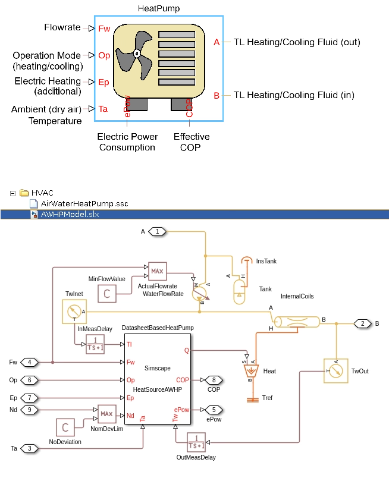

Custom Block: Heat Pump
The source code for the block is in the SSC file Components/HVAC/HeatPumpModel.ssc.
Contents
The heat pump block source file is HeatPumpModel.ssc. The block creates an instance of the AirWaterHeatPump.ssc component class. The AirWaterHeatPump.ssc file is auto generated using the generateCustomHVACComponents.m script, which uses the subsystem2ssc command to convert a Simscape model to it corresponding SSC code. The Simscape implementation of the air water heat pump (AWHP) is shown below and used in the heat pump model. It has the ports:
- Input port Fw specifies the flow rate of liquid from the heat pump.
- Input port Op specifies the operation mode of the heat pump. Set this input to -1 for heating applications and to +1 for cooling applications. You can choose to add no heat to the water by setting this port value to 0.
- Input port Ep specifies if an additional electric heater has to be used to add heat to water. Set the value of this input to 1 when you want to add more heat, using inbuilt electrical heater in the heat pump, or 0 when you do not wish to add any additional heat. The value of the Ep port is multiplied by the value of the Additional electric heater rating parameter to compute the additional heat to be added to water.
- Input port Ta specifies the inlet air dry bulb temperature.
- Simscape Thermal Liquid ports A and B to connect to the Building custom component or to the Operational Data custom component.
- Output port ePow and COP to to output the actual electrical power consumed in the heat pump and the real COP value realized during the heat pump operation.

HeatSourceAWHP is a custom component in the AirWaterHeatPump.ssc file that evaluates the heat pump capacity based on EN14511 test data. The block estimates the capacity of the pump based on inlet air temperature and outlet water temperature values and calculates the heat added or removed from the fluid. The Simscape Foundation Pipe block adds heat to the liquid. The pipe is parameterized based on datasheet values for heat pump coil lengths and internal storage volumes.
The list of parameters needed to define the heat pump block are divided into 3 sections - EN14511 Test Data, Heat Pump, and Operational Limits. The Heat Pump section contains typical datasheet values for heat pump construction and the Operational Limits specify the limits of operation, as defined in the datasheet.
EN14511 Test Data Parameters
You must specify parameters for Air Water Heat Pump based on EN14511 test protocol. The convention used for parameter names is:
- A for air, followed by its dry bulb temperature in degree centigrade.
- W for water, followed by its outlet temperature in degree centigrade.
For example: A-2W55 is the test case where inlet air dry bulb temperature is -2 degree centigrade and the outlet water temperature is 55 degree centigrade.
For all test conditions, you must specify heat pump capacity and the estimated COP or SCOP, the seasonal COP values.
- A-2W55, estimated heating capacity and COP during EN14511 test.
- A-2W65, estimated heating capacity and COP during EN14511 test
- A7W35, estimated heating capacity and COP during EN14511 test
- A7W45, estimated heating capacity and COP during EN14511 test
- A35W18, estimated cooling capacity and COP during EN14511 test
- A35W7, estimated cooling capacity and COP during EN14511 test
Heat Pump Parameters
- Diameter of coil pipe, coilDia, specified as a scalar value.
- Length of coil pipe, coilLen, specified as a scalar value.
- Area of coil pipe, coilArea, specified as a scalar value.
- Internal tank volume for condensation/evaporation, expansionVol, specified as a scalar value.
- Additional electric heater rating, elecHeaterPower, specified as a scalar value. You can specify the port Ep value as 1 to switch on heat addition to the fluid, at a rate specified by this parameter.
- Initial temperature of water in the coils, initialT, specified as a scalar value.
- Initial pressure of water in the coils, initialP, specified as a scalar value.
- Modify COP based on deviation from normal test conditions, nomDevOption, with drop-down list options Enable and Disable. When you select Enable, the heat capacity and the COP values are scaled based on deviation from nominal water flow conditions or the expected temperature difference between inlet and outlet water streams.
- Select heat pump option, modelOption, with drop-down list options as Single Heat Pump and Assembly of Heat Pumps. When you select Assembly of Heat Pumps, you need to specify an additional parameter Number of heat pumps.
- Number of heat pumps, numHeatPumps, specified as an integer greater than or equal to one.
Operational Limit Parameters
- Nominal flow as measured, nominalFlow, specified as a scalar value.
- Minimum water flowrate, minWaterFlowRate, specified as a scalar value.
- Temperature measurement time delay for water flow, measTimelag, specified as a scalar value.
- Minimum operational water temperature, waterOpTempMin, specified as a scalar value.
- Maximum operational water temperature, waterOpTempMax, specified as a scalar value.